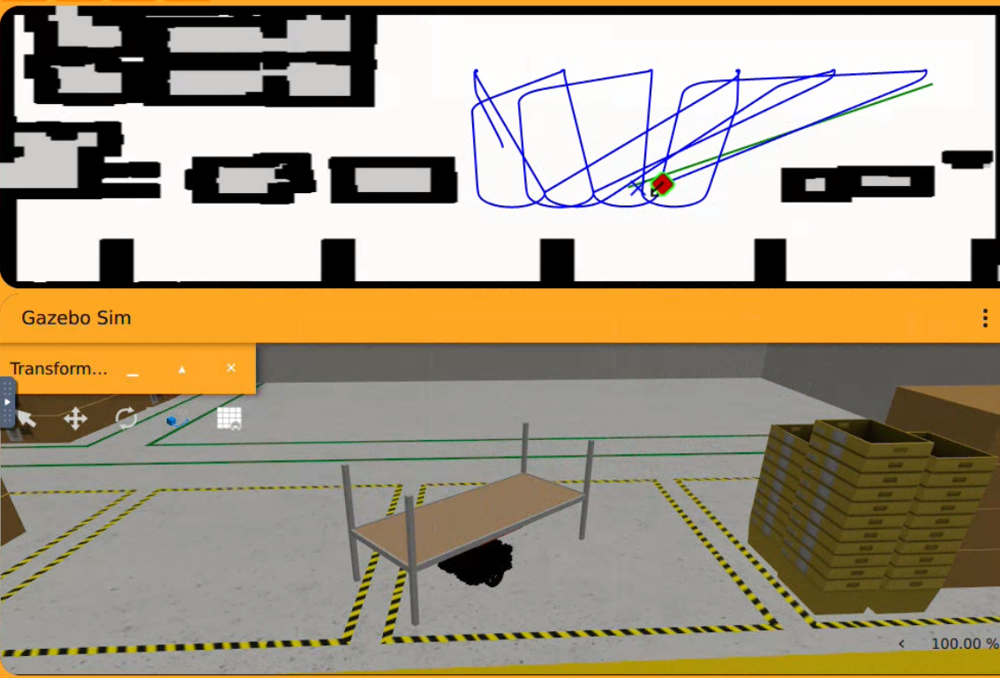
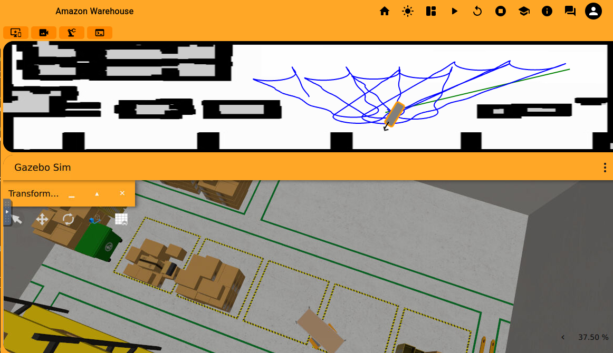

Introduction
The objective of this exercise is to develop an autonomous logistics robot capable of transporting shelves from one location to another within a warehouse. The robot must use the warehouse map and its estimated current position to plan and execute the movements required to complete the task, aiming to find the shortest possible path while avoiding obstacles. The exercise is carried out in the Warehouse 1 environment and involves moving all six shelves to their designated locations. Two types of robots are available: a holonomic robot and an Ackermann robot, both equipped with a lifting platform to carry the shelves. To solve this task, the OMPL (Open Motion Planning Library) is used for path planning, together with a reactive position-based control approach to guide the robot along the planned paths.
The implementation is divided into two stages:
Holonomic robot: First, a point-based planning approach is implemented using a square holonomic robot. Obstacles are inflated to account for the robot's dimensions and ensure collision-free navigation.
Ackermann robot: Finally, the solution is adapted to a rectangular Ackermann robot, taking into account its non-holonomic constraints and limited turning capabilities.
01. Theorical Concepts
This system combines a 360-degree LiDAR sensor with a GPS sensor, to pak. To create the algorithm solution we needed the next theorical concepts:
3D LiDAR Attributes A 3D LiDAR (Light Detection and Ranging) sensor is a device that measures distances to surrounding objects by emitting laser beams and analysing the reflected signals. By collecting multiple measurements in different directions, it generates a three-dimensional representation of the environment, commonly known as a point cloud. In this project, the LiDAR sensor provides information about the obstacles surrounding the vehicle. This information is essential for identifying parked cars, detecting available parking spaces, estimating the orientation of the street and ensuring a safe parking manoeuvre. The HAL.getLidarData() function returns an object containing several attributes that describe the point cloud and the characteristics of the sensor.
Conversion between different representations
The conversion between different types of variables is essential in this practical assignment, as the algorithm is fundamentally based on it. It is necessary to understand the conversion between 3D and 2D, or, more specifically, the conversion of the robot’s real-world coordinates in Gazebo into specific pixels on the provided map, and vice versa. In this process, we must take into account the transformations applied to these points and use a common transformation that accurately calibrates these conversions. Additionally, it is necessary to establish a relationship or conversion between pixels and gazebo points.
Planning
This exercise focuses on motion planning, which consists of finding a collision-free path that allows a robot to move from an initial position to a target location while avoiding obstacles and respecting its movement constraints. The main challenge is not implementing a planning algorithm from scratch, but understanding and using the **Open Motion Planning Library (OMPL)**, a C++ library that provides several sampling-based motion planning algorithms, such as RRT, PRM and KPIECE. OMPL is structured around several key components. The **State Space** defines all the possible configurations of the robot, including its position and, when necessary, its orientation. The **State Validity Checker** determines whether a configuration is valid by checking that the robot does not collide with obstacles. The **Control Space** defines the possible movements of the robot, while the **State Propagator** describes how the robot evolves when a control input is applied. These components are managed by the **Space Information** class, which provides the information required by the planner. The **Planner** then searches for a feasible route between the initial and goal configurations, producing a **Path** consisting of a sequence of states that the robot must follow. There are different approaches to motion planning depending on the robot's geometry and movement constraints. In the simplest case, the robot can be represented as a point in a two-dimensional Euclidean space. To prevent collisions, obstacles are enlarged according to the robot's dimensions, ensuring sufficient clearance along the planned path. However, this approach becomes less suitable when the robot has a rectangular geometry or carries a shelf, since its orientation and dimensions must also be considered. In these cases, the configuration space must include the robot's orientation, using a state space such as **SE2StateSpace**. Furthermore, motion validation is necessary to ensure that the transitions between consecutive states are feasible and collision-free. For robots with non-holonomic constraints, such as Ackermann vehicles, OMPL provides state spaces such as **DubinsStateSpace** and **ReedsSheppStateSpace**, which take into account the vehicle's turning radius and movement restrictions. Reeds-Shepp paths also allow backward motion, making them particularly suitable for planning the movements of an Ackermann robot in this exercise.
03. My Algorithm: HOLONOMIC ROBOT
Myprogram implements an autonomous logistics robot using the OMPL library and an RRTConnect algorithm to plan collision-free paths between the initial shelf positions and their corresponding destination locations. First, the warehouse map is loaded and processed into a grayscale image, and its free space is eroded to increase the safety clearance around obstacles. An affine transformation is calculated to convert coordinates between Gazebo and image pixels, allowing the robot's position and target locations to be represented in the planning map. The path planner checks the validity of each state to avoid obstacles and generates a simplified path. Once a shelf has been collected, its original position is cleared from the planning map to prevent the robot from treating it as an obstacle. The robot follows the planned path using position-based control, adjusting its linear and angular velocities according to the distance and orientation error relative to the target. The implementation is organized into several states: PLANNING, which generates the path; GO_TO, which controls navigation; TURN_AROUND, which rotates the robot 180 degrees; SHELF, which manages the lifting and lowering platform; and RENEW, which updates the shelf index and prepares the next task. This process is repeated until all six shelves have been transported to their designated destinations.

03. My Algorithm: ACKERMAN ROBOT
My The program implements an autonomous logistics robot with Ackermann steering, using the OMPL library and the RRTConnect algorithm to generate collision-free paths between the initial shelf positions and their corresponding destinations. The warehouse map is loaded and processed into a grayscale image, and its free space is eroded to provide additional clearance around obstacles. An affine transformation is used to convert coordinates between Gazebo and image pixels, including the robot's orientation. Unlike the holonomic version, the planner uses a **Reeds-Shepp state space**, which considers both position and orientation while respecting the robot's minimum turning radius, calculated from its wheelbase and maximum steering angle. Once a shelf has been collected, its original position is cleared from the planning map. The robot follows the planned trajectory using a position-based controller that adjusts its linear and angular velocities according to the distance and orientation error. During the outbound journey, the robot moves forward, whereas on the return journey, when carrying a shelf, it follows the path backwards. The implementation is organized into four main states: **PLANNING**, which generates a feasible path; **GO_TO**, which controls the robot's movement along the trajectory; **SHELF**, which manages the lifting and lowering platform; and **RENEW**, which updates the shelf index and prepares the next task. This process is repeated until all six shelves have been transported to their designated destinations.

04. Dificulties or Problems Encountered During Development
In this section, I will explain the problems I encountered during the development of this practice, as well as some issues that I was not able to completely solve.
- First, understanding and implementing the OMPL library was challenging and required a considerable amount of time, as I initially had difficulties understanding how to use its planning algorithms and integrate them into the program.
- The second challenge was the Ackermann robot itself. Since it has different movement constraints compared to a holonomic robot, I had to adapt the path planning algorithm and reimplement the robot's turning and navigation methods. Finding a suitable solution that respected its movement limitations proved to be particularly challenging.
- Finally, the last two shelves caused additional difficulties when working with the Ackermann robot. The coordinates provided in the exercise instructions made the planner interpret their positions as being too close to the warehouse shelf supports. As a result, the planned paths went through these supports, causing the robot to collide with them. This required additional adjustments to the shelf coordinates to achieve successful navigation.
05. Video of the algorithm
There are two videos attached. The first one, shows the holonomic robot. The second one, shows the ackerman robot. In both cases, I removed the shelves to make the robot's task easier, as explained in the practice report.
▶ Watch the holonomic video ▶ Watch the ackerman video